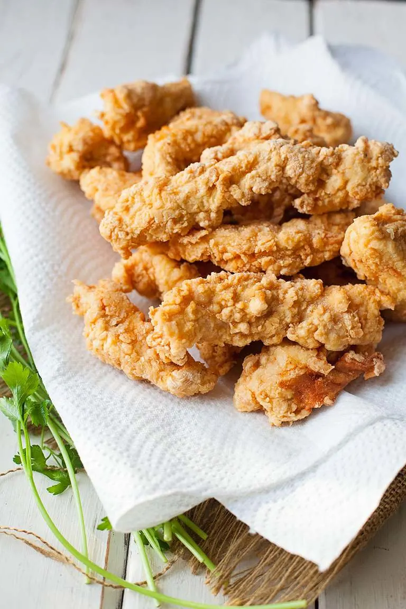

Fried Chicken

Super crispy and golden brown fried chicken. Tender and without a bone, will make you feel warm and tender inside!
Describing the Chicken
Super tasty and decently easy meal to make depending on if you use an air fryer or not. Crispy, can be dipped, served with just about anything
, its a great meal you can serve to your kids, friends, or anyone with a basic taste pallete!
You want to take the tenders, cut them into smaller chicken peices, and dipping them in pan oil. But before you begin that, create the batter
and bread the chicken. Then cook it, and after 20-30 minutes, take it off the fryer and let it cool!
Ingredients
- 1-2 lbs chicken tenders
- 1 large egg beaten
- 3/4 teaspoon salt
- 1 1/2 cups all purpose flour
- 2 tablespoons water
- vegetable oil for frying
Directions
- Fill a 9 inch skillet with 2 inches of oil. Heat it over medium-high heat, and then bread the chicken.
- Mix the flour, salt, and pepper in a large bowl.
- In another bowl, mix the eggs and water.
- Drege the chicken in flour, coating well. Shake off excesss flour and dip in the egg and then the flour a 2nd time.
- Set the chieken aside for 5 minutes, helping the coating adheve to the chicken.
- Check the oil's temperature with a thermometer, it should be around 365-375 degrees.
- Add about 5 peices of chicken at a time and cook until golden blown on each side, 8-10 minutes for one side.
- Turn the chicken and repeat for the other side.
- If you have any extra chicken, cook them in seperate batches.
- Transfer the cooked chicken to another plate with paper towels to soak up grease, add salt to taste.
- Serve with buns, sauce, or anything in between!
back to main page